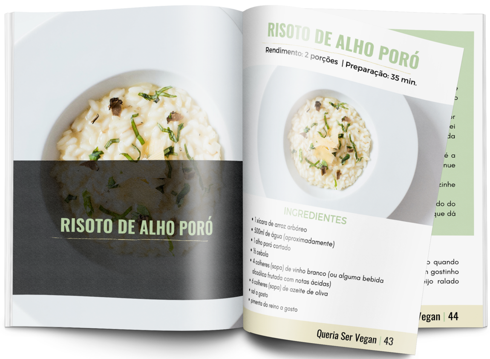

CONHEÇA A ANDRÉIA FARIAS
Andreia Farias é educadora física e pratica o estilo de vida livre de crueldade animal há 6 anos. Andreia, assim como muitas pessoas, acreditava que alimentação vegana é cara e exclusivamente para pessoas com alto poder aquisitivo.
Ela estava errada. Andreia então descobriu a grande verdade: ser vegano pode sim ser barato!
E mais, ela ainda concluiu que a cozinha vegana pode ser:
- ✅ fácil
- ✅ prática
- ✅ deliciosa
Andreia é criadora do projeto Vegana Legal, que tem o objetivo de compartilhar seus aprendizados sobre veganismo e disseminar informações de qualidade sobre este estilo de vida livre de crueldade animal.
✔ Mais de 30 receitas testadas
✔ Ingredientes acessíveis
✔ Sem glúten ou lactose
✔ Garantia de 7 dias